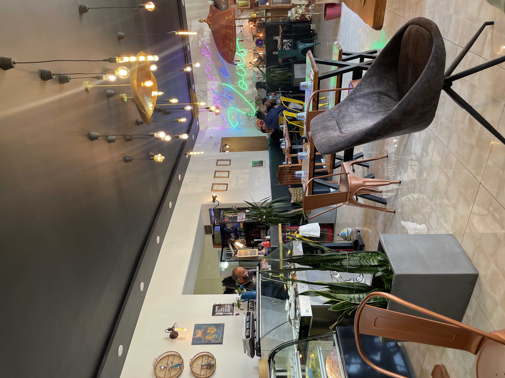
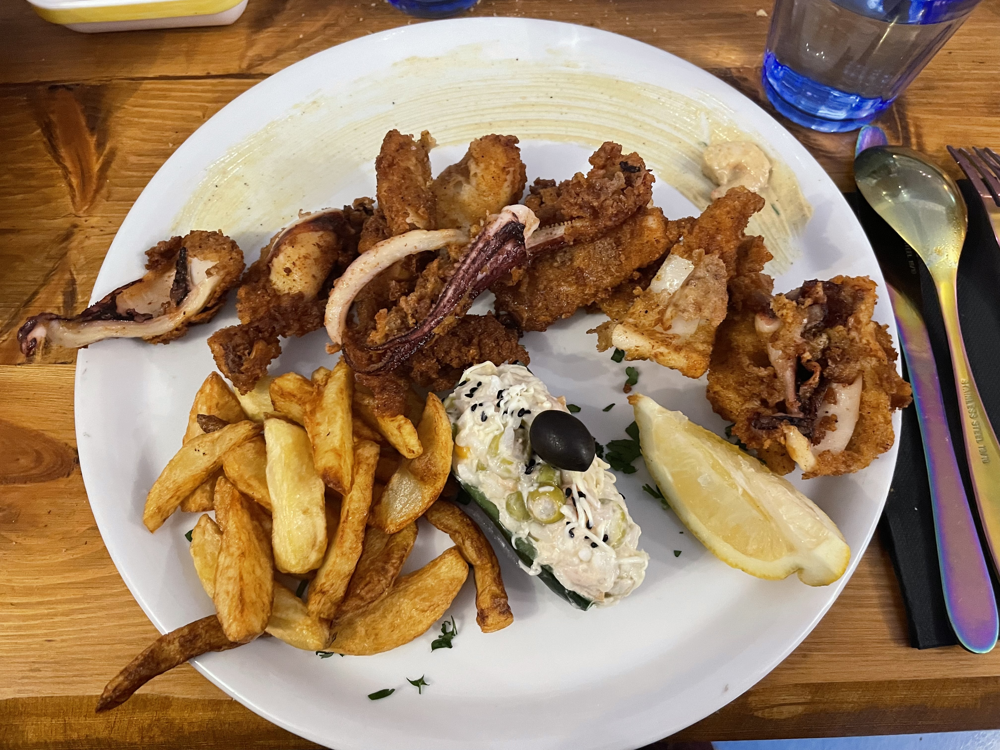
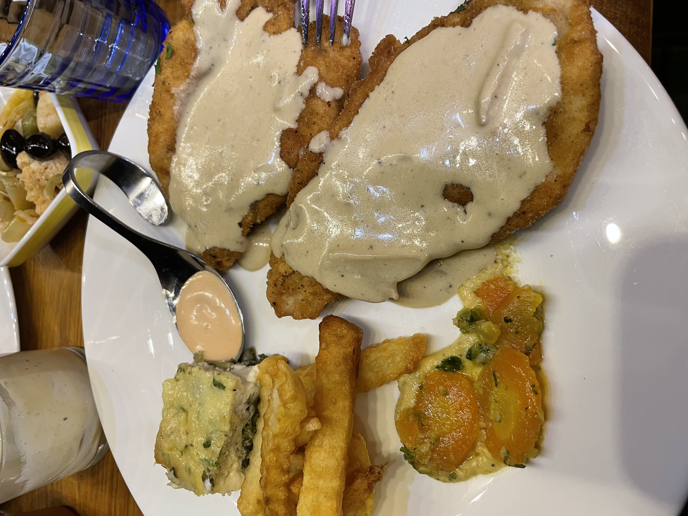
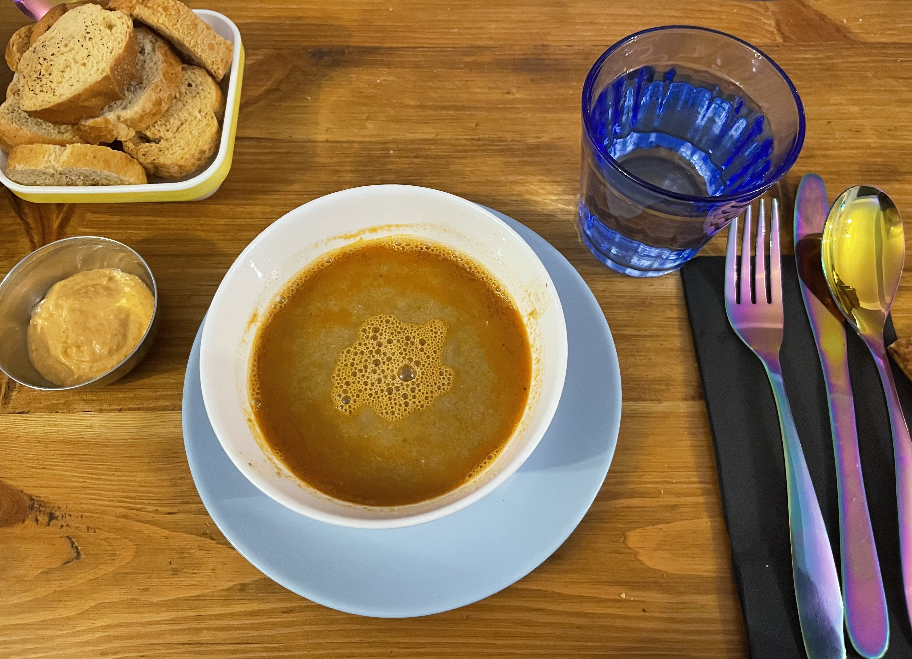

Skikda, avec ses marchés animés et ses restaurants variés, offre une expérience culinaire riche et diversifiée.
Que vous soyez à la recherche de produits frais au marché ou d'un repas délicieux au restaurant, la ville a beaucoup à offrir. Que ce soit pour des fruits de mer frais, des plats traditionnels algériens ou des spécialités internationales, vous trouverez sûrement quelque chose qui ravira vos papilles.
Commençons par les restaurants
Restaurant Comme chez vous

Dans une ambiance intime et conviviale, ce restaurant est idéal pour une soirée entre famille ou amis. Laissez-vous charmer par un menu accessible et diversifié; entre la poissonnerie, les viandes rouges et les volailles. Puis laissez-vous tenter par les nouveautés de la table d’hôte renouvelée tous les mois.
A mon gout, c'est de loin, le meilleur restaurant a Skikda, si on parle du rapport qualité-prix-ambiance, que se soit pour une petite faim, grande faim, envie de poissons, ou d'un café en plein centre ville, ce restaurant vous serez bien servi.



Restaurant Louiza
L'un des plus beaux restaurants de l'est algérien. situé dans un endroit magnifique au bord de la mer, avec une vue plongeante sur le golf de Skikda.
Des spécialités locales de poissons sélectionnés soigneusement à quelques centaines de mètres au port de pêche de Stora.
Pour une sortie en famille, en amoureux , ou sortie entre amis Le restaurant Louiza vous offre le cadre idéal pour passer des moments exceptionnels dans les bras de la méditerranée
Le marché central est l'un des marchés les plus importants et les plus anciens de Skikda. Il est situé au cœur de la ville et est connu pour la diversité de ses produits. On y trouve des fruits et légumes frais, des épices, des viandes, des produits de la mer, ainsi que des produits artisanaux et textiles. Ce marché est très fréquenté par les habitants locaux pour ses produits frais et de qualité.
Le marché couvert
Ce marché est également très populaire et propose une large gamme de produits alimentaires. Il est connu pour ses étals bien organisés et la fraîcheur de ses produits. On y trouve des produits de la mer, des viandes, des fruits et légumes, ainsi que des produits laitiers et des épices.
Le marché aux poissons
Situé près du port, ce marché est spécialisé dans les produits de la mer. Il est très animé le matin, lorsque les pêcheurs locaux ramènent leurs prises. On y trouve une grande variété de poissons, de crustacés et d’autres fruits de mer, frais du jour.
Les marchés temporaires et itinérents
En plus des marchés permanents, Skikda accueille également des marchés temporaires et itinérants, surtout pendant les fêtes et les occasions spéciales. Ces marchés offrent souvent des produits artisanaux, des vêtements, des jouets et d'autres articles saisonniers.